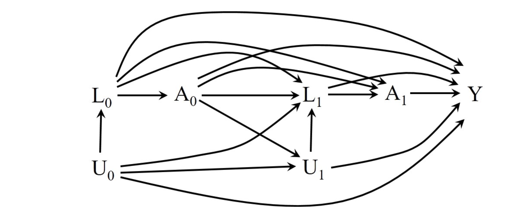
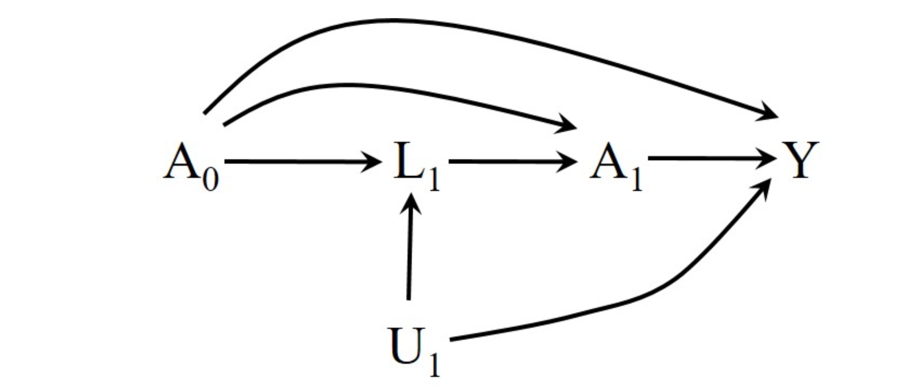
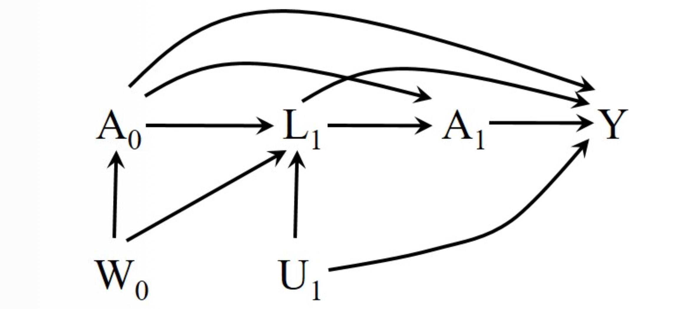

19.1. The causal effect of time-varying treatments
1. Introduction: 고정 처치에서 시변 처치로
- 지금까지의 인과추론 논의는 주로 고정 처치(Fixed Treatment)에 집중해 왔습니다. 즉, 연구 시작 시점(baseline, \(t=0\))에 처치 여부가 결정되고, 이후에는 변하지 않는 상황을 가정했습니다
- 하지만 현실 세계의 많은 인과적 질문들은 시간이 지남에 따라 처치 상태가 변하는 시변 처치(Time-Varying Treatments)를 포함합니다.
- 예를 들어 다음과 같은 상황을 생각해 볼 수 있습니다:
- 의학: 환자가 매달 약을 복용할 수도 있고, 중단할 수도 있음.
- 생활 습관: 흡연, 운동 여부는 시간에 따라 달라짐.
- 사회과학: 고용 상태, 결혼 여부 등은 생애 주기에 따라 변화함.
- Hernán & Robins의 Chapter 19는 이러한 현실적인 질문을 다루기 위해 기존의 인과추론 프레임워크를 시변 처치로 확장합니다.
- 본 포스트에서는 그 첫 번째 단계로 시변 처치의 인과 효과를 어떻게 정의(Definition)하고 표기(Notation)하는지 다룹니다. > Note: 저자들은 이 챕터가 책에서 가장 기술적인(technical) 부분 중 하나라고 언급하며, 엄밀함을 잃지 않기 위해 일정 수준의 복잡함이 불가피함을 강조합니다.
2. Notation and Concepts
- 시변 처치를 다루기 위해서는 시간을 명시적으로 포함하는 새로운 표기법이 필요합니다.
2.1. Time Indexing
- 많은 출판된 논문들과의 호환성을 위해 0-based indexing을 사용합니다. \[
k = 0, 1, 2, ..., K
\]
- 여기서 \(k=0\)은 추적 관찰(follow-up)이 시작되는 시점이자 첫 번째 처치가 가능한 시점을 의미합니다.
2.2. Time-Varying Treatment (\(A_k\))
- 각 시점 \(k\)에서의 처치 변수를 \(A_k\)로 정의합니다. \[
A_k \in \{0, 1\}
\]
- \(A_k = 1\): 시점 \(k\)에서 처치를 받음 (Treated)
- \(A_k = 0\): 시점 \(k\)에서 처치를 받지 않음 (Untreated)
- 예를 들어, HIV 환자의 5년(\(K=59\)개월) 추적 연구에서 \(A_k\)는 \(k\)번째 달에 항바이러스제 치료를 받았는지 여부를 나타냅니다. 연구 시작 전(\(k < 0\))에는 아무도 처치를 받지 않았다고 가정합니다(\(A_{-1}=0\)).
2.3. Treatment History (\(\overline{A}_k\))
- 시변 처치 인과추론의 핵심은 단일 시점의 처치가 아닌 처치 이력(History)을 다룬다는 점입니다.
- 시점 \(0\)부터 \(k\)까지의 처치 이력을 overbar를 사용하여 다음과 같이 표기합니다.
\[ \overline{A}_k = (A_0, A_1, ..., A_k) \]
- 전체 추적 기간(\(K\)) 동안의 전체 처치 이력은 아래 첨자를 생략하고 단순히 \(\overline{A}\)로 표기하기도 합니다.
예시: 처치 전략의 표현
전체 기간 동안의 처치 이력 \(\overline{A}\)는 개인마다 다르게 나타날 수 있습니다.
- Always Treated (\(\overline{1}\)): 연구 기간 내내 처치를 받은 경우 \[\overline{A} = (1, 1, ..., 1) = \overline{1}\]
- Never Treated (\(\overline{0}\)): 연구 기간 내내 처치를 받지 않은 경우 \[\overline{A} = (0, 0, ..., 0) = \overline{0}\]
- Intermediate Histories: 일부 기간만 처치를 받은 경우 (예: \(1, 0, 1, 0, ...\))
3. Defining the Causal Effect
3.1. The Limitation of Fixed-Point Contrast
고정 처치 상황에서는 인과 효과를 “처치군(\(a=1\))의 평균 결과와 대조군(\(a=0\))의 평균 결과의 차이”로 단순하게 정의할 수 있었습니다. \[ \text{Fixed Effect} = E[Y^{a=1}] - E[Y^{a=0}] \]
여기서 처치 시점은 \(k=0\) 하나뿐이므로, 시간에 대한 언급이 필요 없었습니다.
하지만 시변 처치 상황에서는 단일 시점 \(k\)에서의 처치 \(A_k\)만으로 인과 효과를 정의할 수 없습니다. \[ E[Y^{a_k=1}] - E[Y^{a_k=0}] \quad (\text{Insufficient}) \]
위 식은 나머지 기간(\(k\) 이외의 시점)의 처치가 어떻게 되는지에 대한 정보를 담고 있지 않기 때문에, 전체 기간에 걸친 시변 처치 \(\overline{A}\)의 효과를 대변하지 못합니다.
3.2. Contrast of Counterfactual Outcomes under Treatment Strategies
- 따라서 시변 처치의 평균 인과 효과(Average Causal Effect)는 전체 처치 이력(Treatment History)에 따른 반사실적(Counterfactual) 평균 결과의 차이로 정의해야 합니다.
\[ \text{Causal Effect} = E[Y^{\overline{a}}] - E[Y^{\overline{a}'}] \]
- 여기서:
- \(\overline{a}\): 특정 처치 전략 (예: 항상 치료 \(\overline{1}\))
- \(\overline{a}'\): 비교 대상이 되는 다른 처치 전략 (예: 절대 치료 안 함 \(\overline{0}\))
- \(Y^{\overline{a}}\): 개인이 전략 \(\overline{a}\)를 따랐을 때 관측되었을 반사실적 결과(Outcome)
결과 변수 (\(Y\))
- 편의상 결과 변수 \(Y\)는 추적 관찰이 끝난 시점(\(K + 1 = 60\))에 측정된 건강 상태(값이 클수록 좋음)라고 가정합니다. 물론 이 개념은 시변 결과(Time-varying outcome)나 생존 분석(Failure time outcome)에도 적용 가능합니다.
3.3. Non-Uniqueness of the Effect
중요한 점은 시변 처치에서 “인과 효과”는 유일하게 정의되지 않는다는 것입니다. \(K=59\)일 때, 이분형(dichotomous) 처치만 고려하더라도 가능한 처치 전략의 수는 최소 \(2^K\)개에 달합니다. 따라서 우리는 어떤 전략끼리 비교할 것인지 명확히 해야 합니다.
가장 단순한 비교의 예시는 다음과 같습니다: \[ \text{Effect} = E[Y^{\overline{a}=\overline{1}}] - E[Y^{\overline{a}=\overline{0}}] \]
이는 “연구 기간 내내 치료받는 것”과 “전혀 치료받지 않는 것” 사이의 인과 효과를 의미합니다.
하지만 다음과 같은 복잡한 비교도 가능합니다:
- \(\overline{a} = (1, 0, 1, 0, ...)\): 격월로 치료
- \(\overline{a}' = (0, 1, 1, 1, ...)\): 첫 달만 빼고 매달 치료
4. Static vs. Dynamic Treatment Strategies
- 논문의 19.1절 후반부와 19.2절 초반부에서는 처치 전략을 더 확장하여 설명합니다.
4.1. Static Treatment Strategy
- 위에서 언급한 \(\overline{a}=(1,1,...1)\) 처럼, 처치 규칙이 사전에 고정된 값들의 시퀀스로 정해지는 것을 의미합니다. 모든 개인이 동일한 시점에 동일한 규칙을 적용받습니다.
4.2. Dynamic Treatment Strategy
- 하지만 현실적인 임상 전략은 환자의 상태에 따라 달라질 수 있습니다. 이를 동적 처치 전략(Dynamic Treatment Strategy)이라고 합니다.
- 예를 들어, CD4 세포 수(\(L_k\))라는 시변 공변량(Time-varying covariate)이 있다고 가정해 봅시다.
- 전략: “CD4 수치가 높으면(\(L_k=0\)) 치료하지 않고, 수치가 낮아지면(\(L_k=1\)) 그때부터 치료를 시작하여 계속 유지한다”.
- 이 경우, \(k\) 시점의 처치 \(a_k\)는 고정된 값이 아니라, 개인의 이전 상태 \(L_k\)의 진화(evolution)에 따라 달라집니다. 이러한 동적 전략까지 포함하면 정의할 수 있는 인과 효과의 종류는 무한히 많아집니다.
19.2 Treatment strategies
1. Introduction
- 이전 포스트(Chapter 19.1)에서 우리는 시변 처치(Time-Varying Treatment) 환경에서는 단일 시점의 비교가 불가능하며, 처치 이력(Treatment History) 전체를 고려해야 함을 배웠습니다.
- 하지만 단순히 “치료를 받았다/안 받았다”의 이력만으로는 현실의 복잡한 의사결정 과정을 모두 담아낼 수 없습니다. 임상 현장이나 정책 결정에서는 환자의 상태 변화에 따라 유연하게 대처하는 ’규칙’이 필요하기 때문입니다.
- 이번 포스트에서는 이러한 규칙을 처치 전략(Treatment Strategies)이라고 정의하고, 이를 정적(Static) 전략과 동적(Dynamic) 전략으로 분류하는 방법, 그리고 이를 통해 인과 효과를 어떻게 일반화하여 정의하는지 다룹니다.
2. Treatment Strategies: Definition
처치 전략(Treatment Strategy)이란 연구 기간 동안 각 시점 \(k\)에서 처치를 어떻게 할당할지 결정하는 규칙(Rule)을 의미합니다. 문헌에 따라 Plan, Policy, Protocol, Regime 등으로 불리기도 합니다.
일반적으로 전략 \(g\)는 시점 \(k\)에서의 처치 할당 함수들의 집합으로 정의될 수 있습니다.
\[ g = [g_0, g_1, ..., g_K] \]
- 여기서 각 \(g_k\)는 과거의 정보(이력)를 바탕으로 현재의 처치 \(A_k\)를 결정합니다. 이 규칙이 고정되어 있는지, 아니면 변화하는 공변량(Covariate)에 반응하는지에 따라 전략은 크게 두 가지로 나뉩니다.
3. Static Treatment Strategies (정적 처치 전략)
3.1. 정의
정적 처치 전략(Static Treatment Strategy)은 처치 할당 규칙이 시간에 따라 변하는 피험자의 상태(Time-varying covariates)에 의존하지 않는 전략입니다. 즉, 연구 시작 시점에 “언제 처치를 하고 언제 안 할지”가 미리 결정되어 있는 시나리오입니다.
수식으로 표현하면, 시점 \(k\)에서의 처치 결정 규칙 \(g_k\)는 오직 과거의 처치 이력 \(\bar{a}_{k-1}\)에만 의존하거나, 아예 사전에 고정된 값입니다. \[ g_k(\bar{a}_{k-1}) \rightarrow \{0, 1\} \]
- Note: \(L_k\) 등의 공변량이 함수 인자에 포함되지 않음
3.2. 예시
- 가장 대표적인 정적 전략은 다음과 같습니다.
- “Always treat”: 연구 기간 내내 치료함. \[\overline{a} = (1, 1, ..., 1) = \overline{1}\]
- “Never treat”: 연구 기간 내내 치료하지 않음. \[\overline{a} = (0, 0, ..., 0) = \overline{0}\]
- “Alternating”: 격월로 치료함. \[\overline{a} = (1, 0, 1, 0, ...)\]
3.3. 경우의 수
- 이분형(Dichotomous) 처치인 경우에도, 가능한 정적 전략의 수는 \(2^K\)개 이상입니다 (각 시점마다 0 또는 1).
- 하지만 이 \(2^K\)개의 전략만으로는 현실의 모든 처치 프로토콜을 설명할 수 없습니다.
4. Dynamic Treatment Strategies (동적 처치 전략)
4.1. Motivation
- 현실, 특히 의학 분야에서는 환자의 상태 변화에 따라 처치를 변경하는 것이 일반적입니다.
- 예를 들어:
- 환자의 CD4 수치가 일정 수준 이하로 떨어지면 치료를 시작한다.
- “약물 독성 반응이 나타나면 치료를 중단한다.”
- 이러한 전략은 사전에 고정된 처치 시퀀스 \(\overline{a} = (a_0, ..., a_K)\)로 표현할 수 없습니다. 왜냐하면 누가 언제 치료를 시작할지 미리 알 수 없고, 개인의 생체 지표 변화에 따라 결정되기 때문입니다.
4.2. 정의
- 동적 처치 전략(Dynamic Treatment Strategy)은 시점 \(k\)에서의 처치 결정이 시간 가변 공변량 \(L_k\)의 진화(evolution)에 의존하는 전략입니다. \[
g_k(\bar{a}_{k-1}, \bar{l}_k) \rightarrow \{0, 1\}
\]
- 여기서 \(\bar{l}_k\)는 시점 \(k\)까지의 공변량 이력을 의미합니다.
4.3. 예시 (HIV 연구)
상황: \(L_k\)는 CD4 세포 수치 (1: 낮음/나쁨, 0: 높음/좋음). 초기에는 모두 \(L_0=0\).
전략 \(g\): “CD4 수치가 높을 땐(\(L_k=0\)) 치료하지 않다가, 수치가 떨어지면(\(L_k=1\)) 치료를 시작하고 그 이후 계속 치료한다.”
이 전략 하에서는 모든 피험자가 같은 규칙 \(g\)를 따르지만, 실제 받게 되는 처치 이력 \(\overline{a}\)는 개인의 \(L_k\) 변화에 따라 달라집니다.
5. Deterministic vs. Random Strategies (Fine Point 19.1)
- 논문의 Fine Point 19.1에서는 전략을 더욱 세밀하게 분류합니다.
- 우리가 지금까지 논의한 것은 특정 조건에서 처치 여부(0 or 1)가 확실히 정해지는 결정론적(Deterministic) 전략이었습니다. 하지만 확률적 요소가 개입된 전략도 존재합니다.
5.1. Classification Table
| 구분 | Static (공변량 \(L\) 무관) | Dynamic (공변량 \(L\) 의존) |
|---|---|---|
| Deterministic (결과값: 0 or 1) |
“항상 치료한다” (\(\overline{1}\)) “절대 치료 안 한다” (\(\overline{0}\)) |
“CD4 수치가 낮으면 치료한다” |
| Random (결과값: 확률 \(p\)) |
“매달 30% 확률로 치료한다” | “CD4 수치가 낮으면 30% 확률로, 높으면 0% 확률로 치료한다” |
5.2. Random Strategy의 의의
- 개념: \(g_k(\cdot)\)가 0 또는 1의 값이 아니라, 처치를 받을 확률(예: 0.3)을 반환합니다.
- 용도: 현실적으로 “최적의 전략(Optimal Strategy)”은 거의 항상 결정론적 동적 전략(예: 독성 생기면 중단)입니다. 하지만, 무작위 배정 임상시험(RCT) 자체가 하나의 Random Strategy입니다. 어떤 전략이 최적일지 모르는 상태에서 이를 탐색하기 위해 과학적으로 필수적인 전략입니다.
6. Defining Causal Effects with Strategies
- 이제 인과 효과(Causal Effect)를 더 일반화하여 정의할 수 있습니다. 인과 효과는 두 가지 처치 전략 간의 반사실적 결과(Counterfactual Outcome)의 비교입니다. \[
\text{Causal Effect} = E[Y^g] - E[Y^{g'}]
\]
- 여기서 \(Y^g\)는 모든 피험자가 전략 \(g\)를 따랐을 때 관측되었을 잠재적 결과입니다.
6.1. 비교의 유연성
- Static vs Static: “항상 치료” vs “절대 치료 안 함” (\(E[Y^{\overline{1}}] - E[Y^{\overline{0}}]\))
- Static vs Dynamic: “항상 치료” vs “CD4 떨어지면 치료”
- Dynamic vs Dynamic: “CD4 < 500일 때 치료” vs “CD4 < 200일 때 치료”
6.2. 표기법 (Notation)
- 저자들은 \(g\)를 일반적인 전략(정적 또는 동적)을 나타내는 기호로 사용합니다.
- 정적 전략을 강조할 때는 \(Y^{g=\overline{a}}\) 또는 \(Y^{\overline{a}}\)로 표기하기도 합니다.
- 동적 전략을 포함한 일반적인 경우 \(Y^g\)를 사용합니다.
19.3 Sequentially randomized experiments
1. Introduction
이전 섹션(19.2)에서 우리는 시변 처치(Time-Varying Treatment)의 인과 효과를 정의하기 위해 다양한 처치 전략(Treatment Strategies)을 고려해야 함을 배웠습니다. 그렇다면 이러한 전략들의 효과를 데이터로부터 어떻게 추정할 수 있을까요?
고정 처치(Fixed Treatment) 상황에서 무작위 배정(Randomization)이 교란(Confounding)을 제거하는 “Gold Standard”였던 것처럼, 시변 처치 상황에서도 이에 대응하는 실험 설계가 존재합니다. 바로 순차적 무작위 실험(Sequentially Randomized Experiment)입니다.
이번 포스트에서는 세 가지 인과 다이어그램(Causal Diagrams)을 통해 시변 처치 데이터의 생성 과정을 모델링하고, 어떤 조건 하에서 인과 효과가 식별 가능한지(Identifiable) 살펴봅니다.
2. Causal Structures in Time-Varying Settings
- 시변 처치 \(A_k\), 측정된 공변량 \(L_k\), 결과 변수 \(Y\), 그리고 측정되지 않은 공변량 \(U_k\) 간의 관계를 나타내는 세 가지 대표적인 시나리오를 살펴보겠습니다. 편의를 위해 시간은 \(k=0, 1\) 두 시점만 표시합니다.
2.1. Scenario 1: Marginal Randomization (Figure 19.1)
첫 번째 시나리오는 가장 단순한 형태의 실험입니다.
구조적 특징:
- 측정된 공변량 \(L\)이나 측정되지 않은 공변량 \(U\)에서 처치 \(A\)로 향하는 화살표가 없습니다.
- 처치 \(A_k\)는 오직 이전 처치 이력 \(A_{k-1}\)에만 의존하거나, 완전히 무작위로 결정됩니다.
예시 (HIV 연구):
- 연구자가 동전 던지기로 처치를 배정합니다.
- 단, 이전 달에 치료받은 사람(\(A_{k-1}=1\))은 계속 치료하고(확률 1), 받지 않은 사람(\(A_{k-1}=0\))은 50% 확률로 치료를 시작합니다.

- 이 경우, 정적 처치 전략(Static Strategy) \(\bar{a}\)에 대한 반사실적 평균 \(E[Y^{\bar{a}}]\)는 단순히 해당 전략을 실제로 따른 사람들의 평균 \(E[Y|A=\bar{a}]\)와 같습니다.
- 즉, 별도의 조정(Adjustment) 없이도 인과 효과를 구할 수 있습니다.
2.2. Scenario 2: Conditional Randomization (Figure 19.2)
두 번째 시나리오는 처치 배정이 측정된 과거 정보에 의존하는 경우입니다.
구조적 특징:
- 측정된 공변량 \(L_k\)에서 처치 \(A_k\)로 향하는 화살표가 존재합니다.
- 하지만 측정되지 않은 공변량 \(U_k\)에서 처치 \(A_k\)로 향하는 화살표는 없습니다.
예시:
- 의사(또는 연구자)가 환자의 CD4 수치(\(L_k\))를 보고 처치 여부를 결정합니다.
- “CD4 수치가 낮으면(\(L_k=1\)) 80% 확률로 치료하고, 높으면(\(L_k=0\)) 40% 확률로 치료한다.”

- 이 시나리오에서는 측정된 변수 \(L\)에 의한 교란(Confounding)이 존재합니다.
- 따라서 단순 평균 비교는 편향되지만, \(L\)에 대한 적절한 조정(G-methods 등)을 통해 인과 효과를 추정할 수 있습니다.
- 이것이 바로 순차적 무작위 실험의 전형적인 모델입니다.
2.3. Scenario 3: Unmeasured Confounding (Figure 19.3)
세 번째 시나리오는 가장 현실적이면서도 까다로운 상황입니다.
구조적 특징:
- 측정된 공변량 \(L_k\)뿐만 아니라, 측정되지 않은 공변량 \(U_k\)에서도 처치 \(A_k\)로 향하는 화살표가 존재합니다.
예시:
- 환자의 면역 시스템 손상 정도(\(U_k\))는 CD4 수치(\(L_k\))와 결과(\(Y\))에 모두 영향을 줍니다.
- 의사가 CD4 수치 외에도 환자의 안색이나 기력 등 데이터에 기록되지 않는 정보(\(U_k\))를 보고 처치를 결정합니다.

- 이 경우, \(U_k\)를 보정할 방법이 없으므로 인과 효과를 편향 없이 추정하는 것은 불가능합니다. Figure 19.3은 무작위 실험이 될 수 없습니다.
3. Sequentially Randomized Experiments
3.1. 정의 (Definition)
순차적 무작위 실험(Sequentially Randomized Experiment)이란, 모든 시점 \(k\)에서 처치 \(A_k\)가 연구자(investigator)에 의해 무작위로 할당되되, 그 할당 확률이 이전의 처치 및 측정된 공변량 이력 \((\bar{A}_{k-1}, \bar{L}_k)\)에 의존할 수 있는 실험을 말합니다.
이를 수식보다는 인과 그래프의 조건으로 표현하면 다음과 같습니다:
- 어떤 시점 \(k\)에서도 측정되지 않은 예후 인자(Prognostic factor) \(U\)로부터 처치 \(A_k\)로 향하는 \(U \rightarrow A_k\) 직접적인 화살표가 없어야 한다.”
따라서 앞서 살펴본 Figure 19.1과 Figure 19.2는 순차적 무작위 실험을 나타낼 수 있습니다.
3.2. 관찰 연구와의 연결 (Observational Studies)
실제 현실 데이터(Observational Data)는 대부분 Figure 19.2와 Figure 19.3 중 하나에 해당합니다.
- 의사는 환자의 상태(\(L_k\))를 보고 처방하므로 \(L_k \to A_k\) 화살표는 존재합니다.
- 문제는 \(U_k \to A_k\) 화살표의 존재 여부입니다.
관찰 연구에서 인과 추론을 수행한다는 것은, “우리의 연구가 Figure 19.3이 아니라 Figure 19.2를 따르고 있다”고 가정하는 것과 같습니다. 즉, 처치 결정에 영향을 미치는 모든 변수를 측정하였다고 가정하는 것입니다.
하지만 불행히도, 데이터만 가지고는 이 연구가 Figure 19.2인지 19.3인지 경험적으로 검증할(Empirically test) 방법은 없습니다. 이는 연구자의 도메인 지식에 기반한 가정(Assumption)의 영역입니다.
19.4 Sequential exchangeability
1. Introduction
- 이전 포스트(Chapter 19.3)에서 우리는 순차적 무작위 실험(Sequentially Randomized Experiment)을 통해 시변 처치의 인과 효과를 편향 없이 추정할 수 있음을 배웠습니다. 하지만 현실의 데이터는 대부분 관찰 연구(Observational Study)에서 나옵니다.
- 고정 처치(Time-fixed treatment) 문제에서 관찰 데이터를 마치 무작위 실험처럼 다루기 위해 조건부 교환 가능성(Conditional Exchangeability) 가정을 도입했던 것처럼, 시변 처치 문제에서도 이에 상응하는 가정이 필요합니다.
- 이번 포스트에서는 시변 처치 인과추론의 가장 중요한 식별 가정인 순차적 교환 가능성(Sequential Exchangeability)을 정의하고, 복잡한 시변 구조에서 이 가정이 성립하는지 판별하기 위해 SWIG(Single World Intervention Graphs)를 어떻게 활용하는지 살펴봅니다.
2. From Conditional to Sequential Exchangeability
2.1. Recap: Fixed Treatment
- 고정 처치 \(A\)에 대한 인과 효과를 식별하기 위해서는, 측정된 공변량 \(L\)이 주어졌을 때 처치가 배정되는 메커니즘이 잠재적 결과(Counterfactual Outcome) \(Y^a\)와 독립이어야 합니다.
\[ Y^a \perp \!\!\! \perp A \mid L \quad \text{for all } a \]
- 이 조건이 성립하면 우리는 \(L\)을 통제(Adjustment)함으로써 인과 효과를 계산할 수 있습니다.
2.2. The Need for Sequential Exchangeability
시변 처치 상황에서는 처치가 한 번(\(k=0\))이 아니라 여러 시점(\(k=0, 1, ..., K\))에 걸쳐 발생합니다. 따라서 “교환 가능성” 조건도 모든 시점에서 성립해야 합니다.
순차적 무작위 실험에서는 연구자가 \(k\) 시점의 처치 \(A_k\)를 과거 이력(History)에 기반하여 무작위로 배정하므로, 다음의 조건이 자연스럽게 성립합니다.
“어떤 시점 \(k\)에서도, 과거의 처치 및 공변량 이력이 주어졌을 때, 미래의 잠재적 결과는 현재의 처치 할당과 독립적이다.”
- 이를 수식화한 것이 바로 순차적 교환 가능성입니다.
3. Defining Sequential Exchangeability
3.1. For Static Strategies
- 정적 처치 전략(Static Strategy) \(\bar{a} = (a_0, a_1, ..., a_K)\)에 대한 인과 효과를 추정하기 위해서는 다음 조건이 모든 시점 \(k\)에서 성립해야 합니다.
\[ Y^{\bar{a}} \perp \!\!\! \perp A_k \mid \bar{A}_{k-1} = \bar{a}_{k-1}, \bar{L}_k = \bar{l}_k \]
수식의 의미 해석
- \(Y^{\bar{a}}\): 전체 처치 계획 \(\bar{a}\)를 끝까지 따랐을 때의 잠재적 결과.
- \(\mid \bar{A}_{k-1} = \bar{a}_{k-1}, \bar{L}_k = \bar{l}_k\): 시점 \(k\)에서 처치 \(A_k\)를 결정하기 직전까지 우리가 알고 있는 모든 정보(과거의 처치 이력과 공변량 이력)를 조건부로 합니다.
- \(\perp \!\!\! \perp A_k\): 그 조건 하에서, \(k\) 시점의 실제 처치 \(A_k\)는 잠재적 결과와 무관하게(마치 동전 던지기처럼) 결정되어야 합니다. 즉, “측정되지 않은 교란 요인(Unmeasured Confounding)이 \(A_k\)에 영향을 주지 않는다”는 뜻입니다.
3.2. For Dynamic Strategies
- 동적 전략 \(g\)에 대해서도 유사한 형태의 가정이 필요합니다.
- 전략 \(g\)가 주어졌을 때의 잠재적 결과를 \(Y^g\)라고 할 때:
\[ Y^g \perp \!\!\! \perp A_k \mid \bar{A}_{k-1} = g(\bar{A}_{k-2}, \bar{L}_{k-1}), \bar{L}_k \]
- 이 조건은 정적 전략의 경우와 구조적으로 동일하지만, 조건부로 하는 과거 처치 이력 \(\bar{A}_{k-1}\)이 전략 \(g\)에 의해 결정된 경로를 따르고 있다는 점이 다릅니다.
4. Observational Studies and Figure 19.4
- 순차적 교환 가능성은 가정일 뿐, 데이터 자체에서 증명할 수 없습니다. 연구자는 자신의 연구 설계와 도메인 지식을 바탕으로 이 가정이 성립하는지 판단해야 합니다. 이를 위해 인과 그래프(DAG)를 활용합니다.
4.1. The Ideal Case (Figure 19.2 Revisited)
- 앞서 본 Figure 19.2는 순차적 무작위 실험 혹은 이상적인 관찰 연구를 나타냅니다.
- 처치 \(A_k\)는 과거의 이력(\(\bar{A}_{k-1}, \bar{L}_k\))에 영향을 받습니다.
- 하지만 측정되지 않은 변수 \(U\)가 \(A_k\)에 직접적인 영향을 주지 않습니다.
- 따라서 \(\bar{L}_k\)를 통제하면 \(A_k\)는 \(Y\)와 조건부 독립이 되며, 순차적 교환 가능성이 성립합니다.
4.2. The Realistic Case (Figure 19.4)
- 하지만 많은 관찰 연구는 Figure 19.4와 같이 더 복잡한 구조를 가집니다.

- Figure 19.4의 핵심 특징은 다음과 같습니다:
- 공통 원인 존재: 측정되지 않은 변수(\(W_k\) 혹은 \(U\))가 현재의 처치 \(A_k\)와 미래의 공변량 \(L_{k+1}\)의 공통 원인으로 작용합니다. *2. 구조적 차이:
- Figure 19.2에서는 \(L_k\)만 잘 측정하면 되었지만,
- Figure 19.4에서는 \(A_k\)와 \(L_{k+1}\)을 연결하는 뒷문 경로(Backdoor path)가 측정되지 않은 변수를 통해 형성됩니다.
- 이러한 구조에서는 어떤 처치 전략을 평가하느냐에 따라 식별 가능성(Identifiability)이 달라질 수 있습니다.
- 정적 전략(\(\bar{a}\))의 경우, 여전히 순차적 교환 가능성이 성립할 수도 있습니다.
- 하지만 동적 전략(\(g\))의 경우, 미래 공변량 \(L_{k+1}\)의 분포를 알아야 하는데, 이것이 측정되지 않은 변수에 의해 교란되어 있다면 식별이 불가능할 수 있습니다.
5. Other Key Assumptions (Technical Point 19.2)
- 시변 처치 인과추론이 성립하기 위해서는 순차적 교환 가능성 외에도 일관성(Consistency)과 양수성(Positivity) 가정이 시변(Time-varying) 문맥에 맞게 엄밀하게 확장되어야 합니다.
5.1. Sequential Consistency (순차적 일관성)
- 고정 처치에서의 일관성 가정을 확장하여, 시변 처치에서는 처치 전략(Strategy)과 관찰된 이력(History) 사이의 관계를 다음과 같이 정의합니다.
\[ \begin{aligned} Y^{\bar{a}} &= Y^{\bar{a}^*} \quad &\text{ if } \bar{a}^* = \bar{a} \\ Y^{\bar{a}} &= Y \quad &\text{ if } \bar{A} = \bar{a} \\ \bar{L}_{k}^{\bar{a}} &= \bar{L}_{k} \quad &\text{ if } \bar{A}_{k-1} = \bar{a}_{k-1} \end{aligned} \]
수식 설명:
- \(Y^{\bar{a}} = Y^{\bar{a}^*} \text{ if } \bar{a}^* = \bar{a}\): 우리가 정의한 처치 전략 \(\bar{a}\)가 동일하다면, 그에 따른 잠재적 결과도 유일하게 정의된다는 뜻입니다. (Well-defined counterfactuals)
- \(Y^{\bar{a}} = Y \text{ if } \bar{A} = \bar{a}\): 만약 현실에서 관찰된 처치 이력 전체(\(\bar{A}\))가 특정 전략 \(\bar{a}\)와 일치한다면, 그 개인의 관찰된 결과 \(Y\)는 해당 전략 하에서의 잠재적 결과 \(Y^{\bar{a}}\)와 같아야 합니다.
- \(\bar{L}_{k}^{\bar{a}} = \bar{L}_{k} \text{ if } \bar{A}_{k-1} = \bar{a}_{k-1}\): 만약 시점 \(k\)까지의 처치 이력이 같다면, 그 시점까지 관찰된 공변량도 잠재적 공변량과 일치해야 합니다.
5.2. Sequential Positivity (순차적 양수성)
- 양수성 가정은 고정 처치에서의 조건(\(f(a|l) > 0\))을 시변 공변량과 처치 이력을 포함한 조건부 확률밀도 함수로 일반화하여 다음과 같이 표현합니다.
\[ \text{If } f_{\bar{A}_{k-1}, \bar{L}_k}(\bar{a}_{k-1}, \bar{l}_k) \neq 0, \text{ then } f_{A_k | \bar{A}_{k-1}, \bar{L}_k}(a_k | \bar{a}_{k-1}, \bar{l}_k) > 0 \]
수식 설명:
- \(f_{\bar{A}_{k-1}, \bar{L}_k}(\bar{a}_{k-1}, \bar{l}_k) \neq 0\): 특정 시점 \(k\)까지의 처치 및 공변량 이력 \((\bar{a}_{k-1}, \bar{l}_k)\)이 모집단 내에서 실제로 발생했다면(밀도가 0이 아니라면),
- \(f_{A_k | \dots}(a_k | \dots) > 0\): 그 이력을 가진 사람들은 다음 시점 \(k\)에서 가능한 모든 처치 옵션 \(a_k\)를 선택할 확률(밀도)을 0보다 크게 가져야 합니다.
- 의미: 과거에 어떤 경로를 밟아왔든 간에, 현재 시점에서 특정 처치를 받을 확률이 아예 없어서는 안 된다는 뜻입니다. 만약 특정 상태에서 치료가 불가능하다면(구조적 0), 해당 데이터로는 인과 효과를 비교할 수 없습니다.
19.5. Identifiability under some but not all treatment strategies
1. Introduction
이전 섹션들에서 우리는 시변 처치(Time-Varying Treatment)의 인과 효과를 추정하기 위해 순차적 교환 가능성(Sequential Exchangeability) 가정이 필요함을 배웠습니다.
하지만 인과 구조(Causal Structure)에 따라 이 가정이 “모든 전략”에 대해 성립할 수도 있고, “일부 전략”에 대해서만 성립할 수도 있다는 점은 매우 중요합니다. 특히, 정적 전략(Static Strategy, \(\bar{a}\))에 대한 효과는 계산할 수 있지만, 동적 전략(Dynamic Strategy, \(g\))에 대한 효과는 계산할 수 없는 상황이 존재합니다.
이번 포스트에서는 이러한 비대칭적인 식별 가능성(Identifiability)이 발생하는 원인을 인과 그래프(DAG)와 SWIG를 통해 분석하고, 이를 뒷받침하는 추가 가정인 일관성(Consistency)과 양수성(Positivity)을 시변 처치 맥락으로 확장해 봅니다.
2. Key Assumptions: Consistency and Positivity
- 식별 가능성 논의에 앞서, 인과 추론의 기본 가정이 시변 처치 환경에서 어떻게 확장되는지 정의해야 합니다. (Technical Point 19.2)
2.1. Consistency (일관성)
- 고정 처치에서의 일관성 가정(“처치 \(A=a\)를 받으면 관측된 결과 \(Y\)는 잠재적 결과 \(Y^a\)와 같다”)은 시변 처치에서 전체 이력(History)에 대한 조건으로 확장됩니다.
\[ \text{If } \bar{A} = \bar{a}, \text{ then } Y^{\bar{a}} = Y \]
- 즉, 개인의 실제 처치 이력 \(\bar{A}\)가 특정 전략 \(\bar{a}\)와 일치한다면, 그 개인의 관측된 결과 \(Y\)는 해당 전략 하의 잠재적 결과 \(Y^{\bar{a}}\)와 동일해야 합니다.
- 동적 전략 \(g\)에 대해서도, 실제 이력이 \(g\)가 지시하는 바와 일치한다면 \(Y^g = Y\)가 성립합니다.
2.2. Positivity (양수성)
- 양수성 가정은 데이터 내에서 모든 가능한 처치 경로를 관측할 수 있어야 함을 의미합니다.
- 시변 처치에서는 “과거의 어떤 이력 \((\bar{a}_{k-1}, \bar{l}_k)\)이 주어지더라도, 현재 시점 \(k\)에서 가능한 모든 처치 \(a_k\)를 받을 확률이 0보다 커야 한다”로 정의됩니다.
\[ \text{If } f_{\bar{A}_{k-1}, \bar{L}_k}(\bar{a}_{k-1}, \bar{l}_k) \neq 0, \text{ then } f_{A_k | \bar{A}_{k-1}, \bar{L}_k}(a_k | \bar{a}_{k-1}, \bar{l}_k) > 0 \]
- 만약 특정 전략 \(g\)에만 관심이 있다면, 모든 경로가 아닌 \(g\)와 호환되는 경로(compatible history)에 대해서만 이 조건이 성립하면 됩니다.
3. Scenario Analysis: When Can We Identify Effects?
- 이제 세 가지 대표적인 인과 구조(DAG)를 통해 식별 가능성의 차이를 살펴보겠습니다.
3.1. Scenario 1: Full Identifiability (Figure 19.5)
- 첫 번째 시나리오는 측정되지 않은 공변량 \(W_k\)가 존재하지만, 이것이 처치 \(A_k\)와 미래의 공변량 \(L_{t>k}\)에만 영향을 주는 경우입니다.

- 해석: 이 구조에서는 \(W_k\)가 “과거 처치와 미래 공변량의 공통 원인” 역할을 합니다. 하지만 우리가 관심을 갖는 \(k\) 시점의 처치 \(A_k\)에 대한 교란 요인으로는 작용하지 않거나(적절히 통제됨), 순차적 교환 가능성 조건을 만족시킵니다.
- 결론: 이 경우, 동적 전략 \(g\)에 대한 순차적 교환 가능성(Sequential Exchangeability for \(Y^g\))이 성립합니다. \[ Y^g \perp \!\!\! \perp A_k \mid \bar{A}_{k-1}, \bar{L}_k \] 따라서 정적 전략(Static)과 동적 전략(Dynamic) 모두에 대한 인과 효과를 식별할 수 있습니다.
3.2. Scenario 2: Partial Identifiability (Figure 19.6)
- 두 번째 시나리오는 매우 흥미롭고 주의가 필요한 경우입니다.

- 구조적 특징: 측정되지 않은 변수 \(W_0\)가 \(A_0\)(과거 처치)와 \(L_1\)(미래 공변량)에 동시에 영향을 줍니다. (\(A_0 \leftarrow W_0 \rightarrow L_1\))
- 정적 전략 (\(\bar{a}\)): \(Y^{\bar{a}}\)에 대해서는 순차적 교환 가능성이 성립합니다. \(L_1\)을 조건부로 통제하면 \(A_1\)의 배정은 무작위라고 볼 수 있기 때문입니다.
- 동적 전략 (\(g\)): 문제가 발생합니다. 동적 전략 \(g\)는 \(L_1\)의 값에 따라 \(A_1\)을 결정합니다 (예: \(L_1=1\)이면 치료). 따라서 \(Y^g\)의 분포를 알기 위해서는 \(L_1^g\)(전략 \(g\) 하에서의 \(L_1\) 분포)를 알아야 합니다.
- 하지만 \(L_1\)은 \(A_0\)와 \(W_0\)의 영향을 받습니다.
- \(A_0\)와 \(L_1\) 사이에는 \(A_0 \leftarrow W_0 \rightarrow L_1\)이라는 뒷문 경로(Backdoor path)가 열려 있습니다.
- \(W_0\)를 측정하지 못했으므로, \(A_0\)가 \(L_1\)에 미치는 인과 효과를 분리해낼 수 없고, 결과적으로 \(L_1^g\)의 분포를 식별할 수 없습니다.

- 결론: Figure 19.6과 같은 관찰 연구에서는 정적 전략의 효과만 추정 가능하며, 동적 전략의 효과는 추정할 수 없습니다.
3.3. Scenario 3: Non-Identifiability (Figure 19.11)
- 마지막은 가장 나쁜 상황입니다. Figure 19.6의 구조에서 \(L_1\)이 결과 \(Y\)에 직접적인 영향을 주는 화살표(\(L_1 \rightarrow Y\))가 추가된 경우입니다.

- 해석: 이제 \(L_1\)은 단순한 중간 단계가 아니라 결과 \(Y\)의 직접적인 원인인 동시에 교란 요인입니다.
- 분석 (with SWIG Fig 19.12): D-separation을 적용해보면, \(Y^{\bar{a}}\)에 대한 정적 순차적 교환 가능성조차 성립하지 않음을 알 수 있습니다.
- 결론: 이 구조에서는 어떠한 전략(정적 또는 동적)에 대한 인과 효과도 데이터로부터 유효하게 추정할 수 없습니다.
19.6 Time-varying confounding and time-varying confounders
1. Introduction
- 이전 챕터들에서 우리는 시변 처치(Time-Varying Treatment)의 인과 효과를 식별하기 위한 조건인 순차적 교환 가능성(Sequential Exchangeability)을 배웠습니다.
\[ Y^{\bar{a}} \perp \!\!\! \perp A_k \mid \bar{A}_{k-1}, \bar{L}_k \]
연구자가 이 조건을 만족시키기 위해 필요한 모든 공변량 \(\bar{L}_k\)를 측정했다고 가정해 봅시다(즉, Figure 19.2와 같은 상황). 그렇다면 이제 남은 문제는 “어떻게 효과를 추정할 것인가?”입니다.
놀랍게도, 우리가 고정 처치(Fixed Treatment) 문제에서 흔히 사용했던 표준적인 조정 방법들(층화, 매칭, 일반적인 다중 회귀분석)은 시변 처치 상황, 특히 시변 교란(Time-varying Confounding)이 존재할 때 편향된 결과를 낳습니다.
이번 포스트에서는 ’시변 교란’이 정확히 무엇인지 정의하고, 왜 고전적인 방법론이 이 문제 앞에서 무력해지는지 인과 그래프(DAG)를 통해 분석합니다.
2. Defining Time-Varying Confounding
2.1. Confounders vs. Confounding
- 시변 교란 요인 (Time-varying Confounders): 시간에 따라 변하는 공변량 \(L_k\) 자체를 의미합니다. (예: 매달 측정되는 CD4 수치)
- 시변 교란 (Time-varying Confounding): 이러한 요인들로 인해 발생하는 편향(Bias)의 상태를 의미합니다.
2.2. Formal Definition
- 식별 가능성 조건(순차적 교환 가능성)이 성립한다고 가정할 때, 시변 교란은 다음과 같이 정의됩니다.
베이스라인 공변량 \(L_0\)만으로 조정했을 때, 처치 이력에 따른 잠재적 결과의 평균이 관찰된 결과의 조건부 평균과 다르다면, 시변 교란이 존재한다고 말한다.
\[ E[Y^{\bar{a}} | L_0] \neq E[Y | A=\bar{a}, L_0] \]
- 역으로 말하면, 시변 교란이 없다(No time-varying confounding)는 것은 베이스라인 정보만으로도 충분히 인과 효과를 추정할 수 있다는 뜻입니다. 이에 대한 충분 조건은 무조건적 순차적 교환 가능성(Unconditional Sequential Exchangeability)입니다.
\[ Y^{\bar{a}} \perp \!\!\! \perp A_k \mid \bar{A}_{k-1} \]
이는 과거의 처치 이력만 주어지면, 현재의 처치 \(A_k\)가 잠재적 결과와 독립이라는 뜻입니다. 순차적 무작위 실험(Figure 19.1)이 바로 이 경우에 해당하며, 이때는 복잡한 시변 공변량 \(L_k\)를 조정할 필요가 없습니다.
하지만 관찰 연구에서는 대부분 \(L_k\)가 처치 \(A_k\)에 영향을 주기 때문에 시변 교란이 발생합니다.
3. The Problem: Treatment-Confounder Feedback
- 시변 교란이 발생했을 때 가장 심각한 문제는 처치-교란 피드백(Treatment-Confounder Feedback) 구조가 형성될 때입니다.
3.1. Feedback Loop Structure
- 피드백 루프는 다음 두 가지 화살표가 동시에 존재할 때 발생합니다.
- Confounder \(\to\) Treatment: 공변량 \(L_k\)가 미래의 처치 \(A_k\)에 영향을 줌 (의사가 환자 상태를 보고 처방).
- Treatment \(\to\) Confounder: 과거의 처치 \(A_{k-1}\)이 미래의 공변량 \(L_k\)에 영향을 줌 (약물이 환자 상태를 변화시킴).
\[ A_{k-1} \longrightarrow L_k \longrightarrow A_k \]
- 이 구조는 표준적인 조정 방법(Standard Adjustment Methods)을 사용할 수 없게 만드는 “딜레마”를 형성합니다.
3.2. The Dilemma of Adjustment (Figure 19.2 Analysis)
- Figure 19.2는 전형적인 시변 교란과 피드백이 있는 상황을 묘사합니다.

우리가 \(A_0\)와 \(A_1\)의 합동 효과(Joint Effect), 즉 \(Y^{\bar{a}}\)를 추정하려 한다고 가정해 봅시다.
- \(A_1\)에 대한 교란 통제 필요성:
- \(L_1\)은 \(A_1\)의 원인이자 \(Y\)의 원인(\(L_1 \to Y\) 또는 \(L_1 \leftarrow U \to Y\))이므로, \(A_1\)의 효과를 추정하려면 \(L_1\)을 통제(Conditioning/Adjustment)해야 합니다.
- \(A_0\)에 대한 편향 발생 위험:
- 하지만 \(L_1\)은 \(A_0\)의 결과(\(A_0 \to L_1\))입니다.
- Case A (Mediation): \(L_1\)이 \(A_0\)의 효과를 매개하는 경로(\(A_0 \to L_1 \to Y\))에 있다면, \(L_1\)을 통제하는 순간 \(A_0\)의 효과 일부를 제거해 버리는 과소 추정(Over-adjustment) 문제가 발생합니다.
- Case B (Collider Bias): Figure 19.2처럼 \(U \to L_1\)과 \(U \to Y\)가 존재하는 경우, \(L_1\)은 \(A_0\)와 \(U\) 사이의 충돌자(Collider)가 됩니다 (\(A_0 \to L_1 \leftarrow U\)).
- 이때 \(L_1\)을 통제하면 \(A_0\)와 \(U\) 사이에 가상의 상관관계가 생기고(\(A_0 \leftrightarrow U\)), 결과적으로 \(A_0 \to L_1 \leftarrow U \to Y\)라는 뒷문 경로(Backdoor Path)가 열리게 됩니다. 이를 선택 편향(Selection Bias) 또는 충돌자 편향이라고 합니다.
3.3. 결론: 진퇴양난 (Catch-22)
\(L_1\)을 조정하지 않으면? \(\to\) \(A_1\)의 효과가 교란됨 (Confounding Bias).
\(L_1\)을 조정하면? \(\to\) \(A_0\)의 효과가 편향됨 (Selection Bias or Over-adjustment).
따라서 일반적인 회귀분석( \(Y \sim A_0 + A_1 + L_1\) )이나 층화 분석은 이 딜레마를 해결할 수 없으며, 시변 처치 효과 추정에 부적합합니다.
4. Summary
Chapter 19.6은 시변 인과추론에서 “왜 특별한 방법론이 필요한가?”에 대한 답을 줍니다.
- 시변 교란(Time-varying Confounding): 베이스라인 정보만으로는 통제되지 않는 교란이 존재하며, 이는 시간이 지남에 따라 변하는 공변량(\(L_k\))에 의해 발생합니다.
- 표준 방법의 실패: \(L_k\)가 과거 처치의 영향을 받고(\(A_{k-1} \to L_k\)), 동시에 미래 처치에 영향을 줄 때(\(L_k \to A_k\)), 이를 처치-교란 피드백이라고 합니다.
- 인과적 딜레마: 피드백이 있는 변수 \(L_k\)를 통제하면 과거 처치(\(A_{k-1}\))에 대한 충돌자 편향이 발생하고, 통제하지 않으면 미래 처치(\(A_k\))에 대한 교란 편향이 남습니다.
- 이러한 한계를 극복하기 위해서는 피드백 구조를 적절히 다룰 수 있는 G-methods (G-formula, IP Weighting, G-estimation)가 필수적입니다. 다음 챕터부터는 이러한 방법론들을 구체적으로 다루게 됩니다.